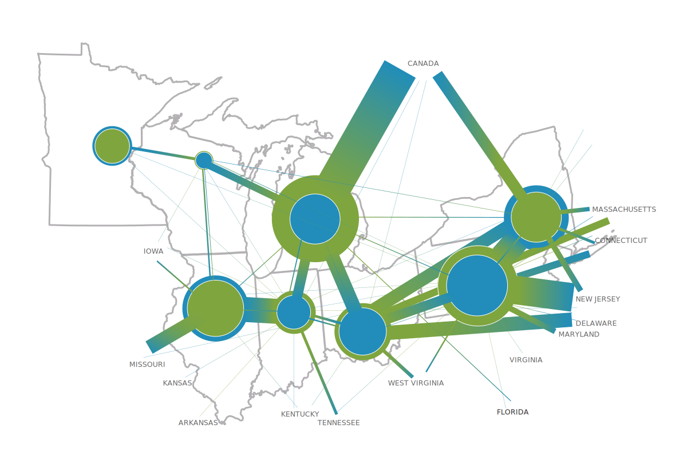
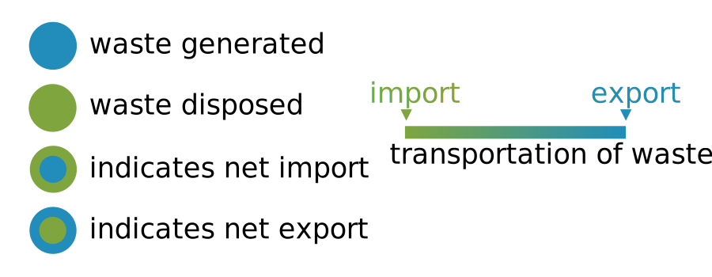

    
    <div class="row">
      <div class="col-md-8">
      </div>
      <div class="col-md-4" style="padding-top:10px"><p><strong>Project Overview:</strong> This graphic illustrates the transportation of waste throughout the Great Lakes region and beyond. Quantities of transported waste are represented by the thicknesses of the lines, quantities of waste produced and disposed of in each state are represented by the size of the dots, and the direction of the waste is represented by the change in color.</p>
      </div>
    </div>

